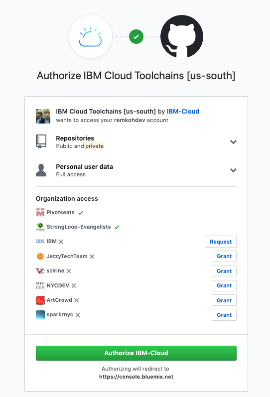

Toolchain 3 - Build your own Toolchain
Create a Toolchain,
- Go to https://cloud.ibm.com/devops/toolchains
- Click the
Create a Toolchain, - Select the
Build your own toolchaintemplate,
Configure the Toolchain, for:
- Toolchain Name:
toolchain-custom-guestbook, - Region:
Washington DC - Resource Group:
default - Select a source provider:
Github, - Click the
Createbutton,
- Toolchain Name:
Add Github to the Toolchain,
- Click the
Add a Toolbutton, - Browse for your source code repository tool, in this case select the
Githubtool, Click the
Authorizebutton, select the appropriate authorizations, and clickAuthorize IBM-Cloudbutton,
Configure the Integration options,
- Select the GitHub server,
- Select the Repository Type, e.g.
Existing, - Select the Reporitory URL, e.g.
https://github.com/<username>/guestbook.git, - Check the
Enable Github Issuesoption, - Check the
Track deployment of code changesoption,
- Click the
Create Integrationbutton,
- Click the
- Add a
Delivery Pipelineto the Toolchain,- Click the
Add a Toolbutton, - Browse for and select
Delivery Pipeline, - Enter a
Pipeline name, e.g.guestbook-custom-delivery-pipeline, - Click the
Create Integrationbutton,
- Click the
- Add a Build stage to the
Delivery Pipeline,- Click the
Delivery Pipelinein the toolchain underDELIVER, - Click
Add Stage - Rename
MyStagetoCLONE, - Configure the
Inputtab,- For
Input TypeselectGit repository, - For
Git repositoryselect your repository, https://github.com//guestbook.git - Verify the
Git URL, - Select the correct
branch, e.g.master, - Set the
Stage Triggeroptions,- Select
Run jobs automatically for Git events on the chosen branch, andWhen a commit is pushed,
- Select
- Check the option
Allow this stage to be run manually by all toolchain members, - and click the
Savebutton,
- For
- Add a job by configuring the
Jobstab,- Click the
ADD JOBicon, and select theBuildoption, - The v2/guestbook is just a simple front-end application, consisting only of an HTML page with client-side Javascript code, so there is nothing to 'build' in this case yet,
- For
Builder typeselectsimple, - For
Pipeline image versionkeep `Inherited from Configure Pipeline (1.0), - Under
Run conditionscheck theStop running this stage if this job failsoption, - Click the
Savebutton,
- Click the
- Click the
Runbutton in theCLONEstage to test your build stage configuration, - After the
STAGE PASSEDand the status bar turns green, click the link toView logs and history,
- Click the
Add a Docker Build and Push stage to the
Delivery Pipeline,Prepare, using the IBM Cloud Kubernetes Service plugin:
Find your cluster's zone,
List all your clusters,
ibmcloud ks clusters OK Name ID State Created Workers Location Version Resource Group Name my-cluster abcdef1g2hijk3lmnopq normal 4 days ago 1 Dallas 1.13.8_1529 defaultView the details of your cluster,
$ ibmcloud ks cluster-get --cluster my-cluster Retrieving cluster remkohdev-cluster... OK Name: my-cluster ID: abcdef1g2hijk3lmnopq State: normal Created: 2019-07-18T18:13:33+0000 Location: hou02 Master URL: https://c5.dal12.containers.cloud.ibm.com:27008 Public Service Endpoint URL: https://c5.dal12.containers.cloud.ibm.com:27008 Private Service Endpoint URL: - Master Location: Dallas ... and more
Create a namespace in your registry,
Using the ibmcloud cli with container-registry plugin,
Login to the Container Registry,
$ ibmcloud cr login ... Logging in to 'us.icr.io'... Logged in to 'us.icr.io'. OKCreate a namespace
guestbook-ns,$ ibmcloud cr namespace-add guestbook-ns Adding namespace 'guestbook-ns'... Successfully added namespace 'guestbook-ns' OKCheck that the namespace was created successfully,
$ ibmcloud cr namespace-list Listing namespaces for account 'USER ONE's Account' in registry 'us.icr.io'... Namespace guestbook-ns OK
Or using the Web UI,
- In the left menu, select
Registry, selectNamespaces, - Click the
Create namespacebutton, - Enter a name under
Namefor your namespace:guestbook-ns, and click theCreatebutton,
- In the left menu, select
Create an API Key,
- The API Key is used to authenticate and authorize a push of the Docker image to the Container Registry. You can use the IBM Cloud cli IAM feature to manage IAM access, API keys, service IDs and access groups,
Create an API Key,
$ ibmcloud iam api-key-create ibm-cloud-container-registry-apikey -d "API key to access IBM Cloud container registry" --file ibm-cloud-container-registry-apikey.json Creating API key ibm-cloud-container-registry-apikey as remkohdev@us.ibm.com... OK API key ibm-cloud-container-registry-apikey was created Successfully save API key information to ibm-cloud-container-registry-apikey.jsonOpen the downloaded file
ibm-cloud-container-registry-apikey.json,- Copy the API Key, you need to paste it into the
API Keycontrol in the next step,
Go to the
Delivery Pipelineagain, via the toolchain underDELIVER,- Click
Add Stage, Rename
MyStagetoDOCKER-BUILD-PUSH,Configure the
Inputtab,- For
Input TypeselectGit repository, - For
Git repositoryselect your repository, e.g.https://github.com/<username>/guestbook.git, - Verify the
Git URL, - Select the correct
branch, e.g.master, - Set the
Stage Triggeroptions,- Select
Run jobs automatically for Git events on the chosen branch, andWhen a commit is pushed,
- Select
- Check the option
Allow this stage to be run manually by all toolchain members, - and click the
Savebutton,
- For
Add a job by configuring the
Jobstab,- Click the
ADD JOBicon, and select theBuildoption, - For
Builder typeselectContainer Registry, - For
Pipeline image versionkeep `Inherited from Configure Pipeline (latest), - Paste the API key created in the Prepare step,
- A popup window asks to input the API key,
- Paste the API key,
- Click the
Authenticatebutton,
- When authenticated, the controls for
IBM Cloud Region,Account Name, andContainer Registry namespacewill populate, - For
IBM Cloud Regionselect your region,- e.g. for Dallas select
US South, - for Washington DC select
US East,
- e.g. for Dallas select
- For
Account Nameselect your account, - For
Container Registry namespaceselect the namesapce created in the Prepare step,guestbook-ns - For
`Docker image nameenter a image name or tag, e.g.guestbook-v2, - Review the script in the
Build scriptcontrol, - Under
Run conditionscheck the optionStop running this stage if this job fails,
- Click the
Configure the
Environment propertiesin theEnvironment propertiestab,- Add two new environment properties:
- Click
Add property, selecttext property, - For
NameenterDOCKER_ROOT, - For
Valueenter./v2/guestbook, - Click
Add property, selecttext property, - For
NameenterDOCKER_FILE, - For
ValueenterDockerfile,
- Click
- Add two new environment properties:
Update the
Build script,The current build script expects a default Dockerfile in the root directory, but our Dockerfile is in the
v2/guestbookdirectory. Replace the current build script by this build script:#!/bin/bash echo -e "Build environment variables:" echo "REGISTRY_URL=${REGISTRY_URL}" echo "REGISTRY_NAMESPACE=${REGISTRY_NAMESPACE}" echo "IMAGE_NAME=${IMAGE_NAME}" echo "BUILD_NUMBER=${BUILD_NUMBER}" echo "DOCKER_ROOT=${DOCKER_ROOT}" echo "DOCKER_FILE=${DOCKER_FILE}" # Learn more about the available environment variables at: # https://cloud.ibm.com/docs/services/ContinuousDelivery?topic=ContinuousDelivery-deliverypipeline_environment#deliverypipeline_environment # To review or change build options use: # ibmcloud cr build --help echo "==========================================================" echo "Checking for Dockerfile at the repository root" if [ -z "${DOCKER_ROOT}" ]; then DOCKER_ROOT=. ; fi if [ -z "${DOCKER_FILE}" ]; then DOCKER_FILE=Dockerfile ; fi if [ -f ${DOCKER_ROOT}/${DOCKER_FILE} ]; then echo -e "Dockerfile found at: ${DOCKER_FILE}" else echo "Dockerfile not found at: ${DOCKER_FILE}" exit 1 fi echo "Linting Dockerfile" npm install -g dockerlint dockerlint -f ${DOCKER_ROOT}/${DOCKER_FILE} echo -e "Building container image" set -x ibmcloud cr build -t $REGISTRY_URL/$REGISTRY_NAMESPACE/$IMAGE_NAME:$BUILD_NUMBER -f $DOCKER_FILE $DOCKER_ROOT set +x- See I added environment variables for $DOCKER_ROOT and $DOCKER_FILE, added a more expansive check to ensure the Dockerfile is found, and added the
--fileflag and customDIRECTORYto theibmcloud cr buildcommand,
- See I added environment variables for $DOCKER_ROOT and $DOCKER_FILE, added a more expansive check to ensure the Dockerfile is found, and added the
Click the
Savebutton,Click the
Runbutton in theDOCKER-BUILD-PUSHstage to test your build stage configuration,Go to https://cloud.ibm.com/kubernetes/registry/main/images and make sure the image was pushed into our registry,
After the
STAGE PASSEDand the status bar turns green, click the link toView logs and history,